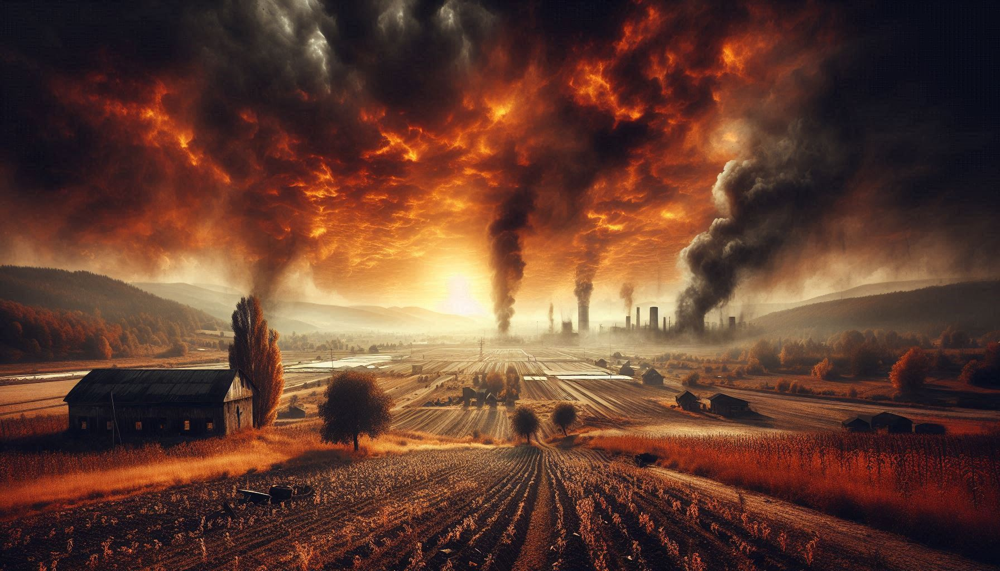

Welcome to Nouvelle Terre
La Nouvelle Terre, as they call it, is the product of a divergence between our two timelines. Explore the twisted history and harsh reality of a world where salvation is just a myth.
Chapter 1: The Great Divergence
The Great Divergence marks the point where the timeline of Nouvelle Terre split from the Old World...

Chapter 2: Global Hunger Crisis
Seventy years have passed since the Nouvelle Terre attempted to rise above its constant wars...
Chapter 3: 2024: The Present State
Perhaps I've gone too far. But how could I know? 2024... we didn’t even celebrate the new year...
Chronicles of the Nouvelle Terre
Explore more stories from the twisted reality of Nouvelle Terre...
About Nouvelle Terre
Nouvelle Terre is a stark vision of what our world could have been...